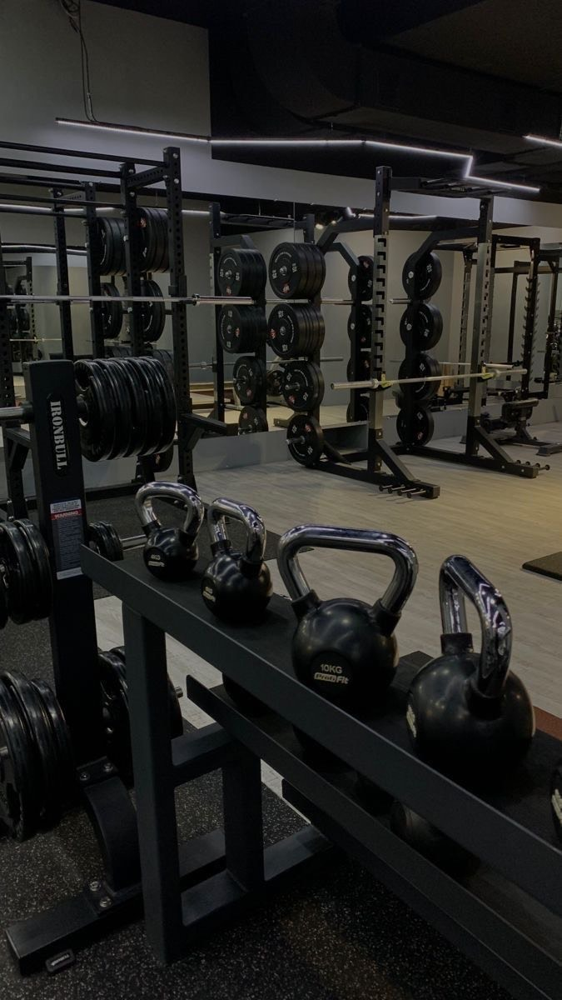
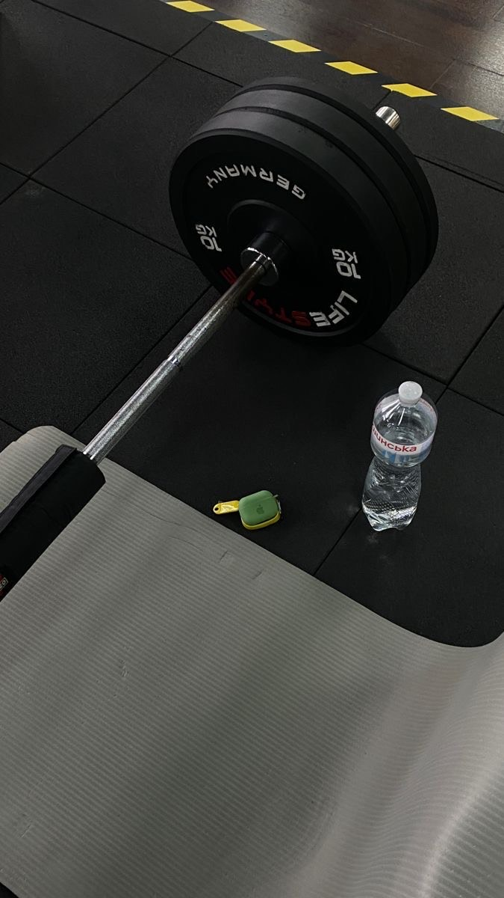
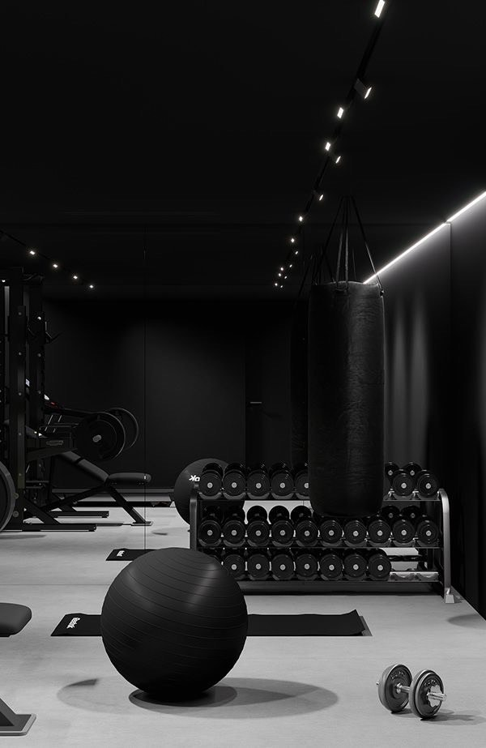
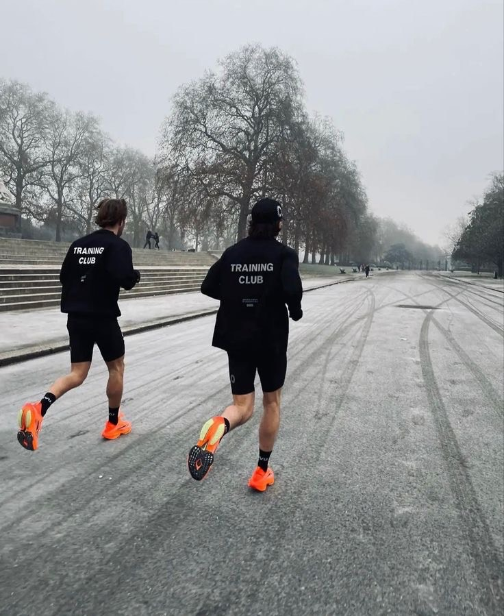
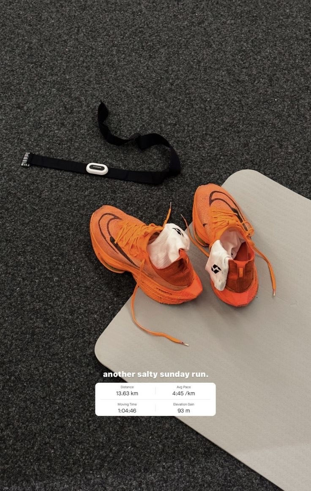
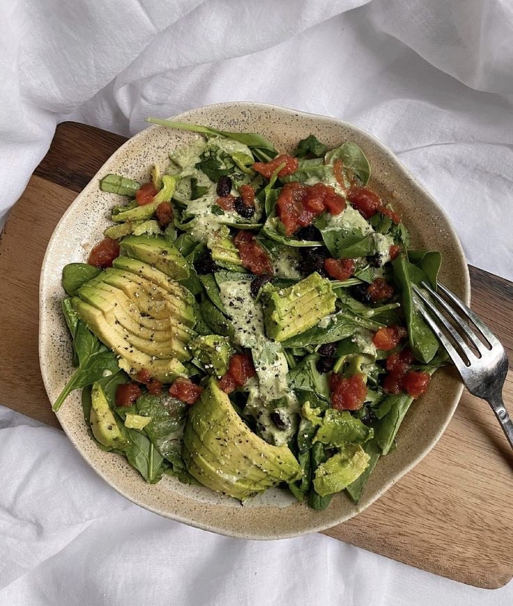
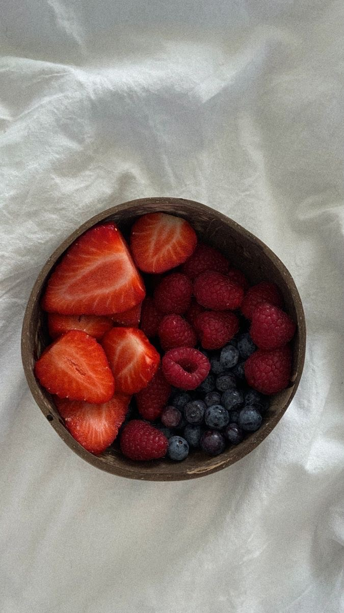
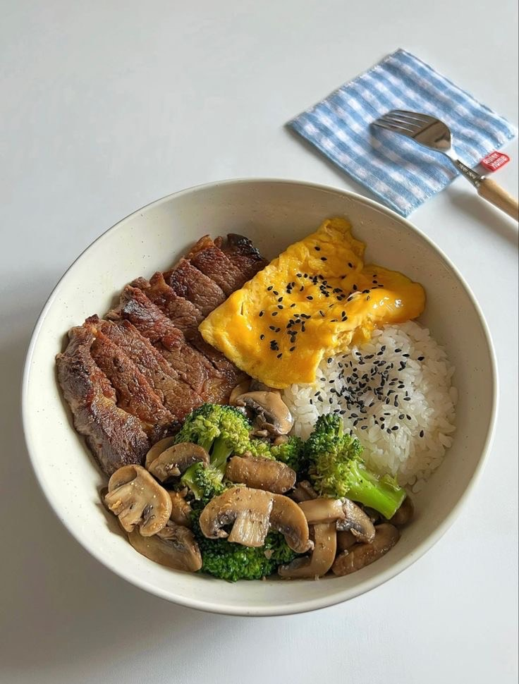
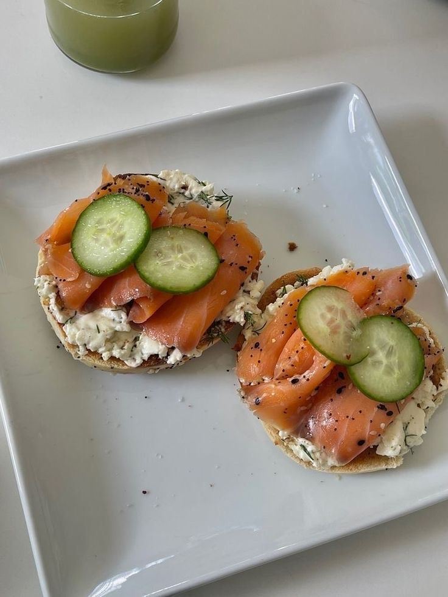

Let's discover my hobbies
I have trained in the gym for almost two years. For me, going to the gym isn't just a routine; it's a lifestyle, a fervent commitment to self-improvement.   
I used to hate running but in the past year I have laced up my shoes, step out into the world, and embarked on a journey of self-discovery. One of my most cherished aspirations was to participate in a half-marathon and I succeeded . The thought of pushing my limits, traversing distances that once seemed insurmountable, and crossing the finish line with a sense of triumph fuels my determination. I took up the challenge and obtained very encouraging results that made me want to train harder to maybe one day complete an iron man.  
I am an avid enthusiast of trying new things, and food provides the perfect avenue for exploration. From bustling street markets to hidden gems tucked away in quaint neighborhoods, I relish the opportunity to sample exotic ingredients, unfamiliar flavors, and bold combinations that challenge my palate and expand my culinary horizons. Whether it's a traditional dish passed down through generations or a contemporary fusion creation, I am always looking forward to tasting new things
   